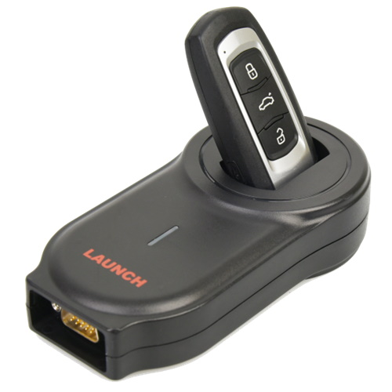

Прописка ключа в авто в Ужгороді — прив'язка до іммобілайзера

Прописка (прив'язка, програмування, кодування) ключа — це запис коду чіпа у пам'ять іммобілайзера авто. Без прописки ключ із правильно нарізаним лезом не запустить двигун. Якщо ви придбали ключ на eBay, Aliexpress, з авторозбірки або привезли з-за кордону — ми його пропишемо до вашого авто. Програмуємо як заготовки з чистим чіпом, так і ключі, які вже були прив'язані до іншої машини (через розкодування).
Маєте ключ, але авто не заводиться?
Пропишемо ключ до іммобілайзера за 30 хвилин — 2 години
Коли потрібна прописка ключа
- Купили новий ключ (заготовку) на запчастини, інтернеті, авторозбірці
- Привезли з-за кордону смарт-ключ (з Польщі, Німеччини, США) і хочете прописати до авто
- Зробили дублікат леза в звичайному ключнику, але чіп не запрограмований
- Купили БУ ключ від такої ж моделі авто — потрібно прив'язати до вашого
- Замінили блок іммобілайзера, ECU або BCM — потрібна повторна прив'язка
- Хочете додати другий/третій ключ до авто
Ціни на прописку ключа
| Послуга | Ціна | Час |
|---|---|---|
| Прописка ключа в авто (бюджетні марки: Renault, Dacia, Hyundai, Kia до 2014) | від 1000 грн | 30 хв |
| Прописка ключа VAG (VW, Audi, Skoda, Seat до 2013, ID48) | від 1500 грн | 30-60 хв |
| Прописка smart-ключа VAG MQB (Megamos AES) | від 3500 грн | 1-2 год |
| Прописка ключа BMW (CAS, FEM/BDC) | від 2500 грн | 1-2 год |
| Прописка ключа Mercedes-Benz (FBS3, FBS4) | від 3500 грн | 2-3 год |
| Прописка ключа Toyota/Lexus (G-chip) | від 2500 грн | 1-2 год |
| Прописка ключа Toyota/Lexus (H-chip, DST-AES) | від 4500 грн | 2-3 год |
| Розкодування ключа (зняття попередньої прив'язки) | від 500 грн | 15-30 хв |
* Ціна за прив'язку 1 ключа. При прописці кількох ключів одночасно — знижка.
Чим прописка відрізняється від виготовлення ключа
Виготовлення — це повний цикл: підібрати заготовку, фрезерувати лезо за замком, встановити чіп, прив'язати до іммобілайзера. Тут ви платите за все.
Прописка — це коли ключ у вас вже є (купили, привезли, отримали з розбірки), лезо вже нарізане, корпус готовий. Залишається лише останній крок — записати чіп у пам'ять авто. Це дешевше у 2-3 рази.
З якими марками працюємо
- VAG group: VW, Audi, Skoda, SEAT, Cupra — включно з MQB-платформою
- BMW: EWS, CAS1-CAS4, FEM/BDC, нові FEM з G-серії
- Mercedes-Benz: FBS3, FBS4 BGA, IR-ключі
- Toyota / Lexus: G-chip, H-chip (DST-AES)
- Hyundai / Kia: всі покоління, включно з нинішніми smart-key
- Renault / Dacia / Nissan: всі моделі, включно з ключ-картами
- Ford: 4D63, HITAG-Pro
- Mazda: 4D63, HITAG-Pro
- Honda / Acura: 4D, G-chip, ID47
- Opel / Vauxhall: всі покоління
Що потрібно для прописки
- Авто (приїхати своїм ходом або на евакуаторі)
- Новий ключ або заготовка, яку треба прив'язати
- Бажано — оригінальний робочий ключ (так програмування швидше)
- Техпаспорт авто (підтвердження що ви власник)
- Паспорт або права
Часті запитання
Чи можна прописати ключ привезений з-за кордону?
Так, якщо чіп не записаний на інше авто. Привезені ключі (з eBay, Aliexpress, авторозбірки) часто це нові заготовки — їх можна прив'язати до вашого авто без проблем. Якщо ключ був прив'язаний — потрібно його розкодувати.
Скільки коштує прописка ключа?
Залежить від марки і типу імобілайзера. Для VAG (VW, Skoda, Audi до 2013) — від 1500 грн. Для нових MQB — від 3500 грн. Toyota/Lexus з H-chip — від 4500 грн. BMW, Mercedes — від 3500 грн.
Що потрібно для прописки ключа?
Авто, новий або привезений ключ (підходящого типу для вашої моделі), документи на авто (техпаспорт). Бажано — оригінальний робочий ключ для швидшого програмування.
Чи можна прописати ключ без оригіналу?
Так, для більшості марок ми можемо запрограмувати ключ навіть якщо у вас немає жодного робочого. Це займає більше часу і коштує дорожче — від 3500 грн залежно від моделі.
Чи буде ключ працювати з усіма функціями?
Так, якщо чіп правильно прив'язаний — працює і запуск двигуна, і центральний замок, і всі кнопки на пульті.
Маєте питання про прописку конкретного ключа?
Скиньте фото ключа і скажіть VIN — підкажемо чи підходить